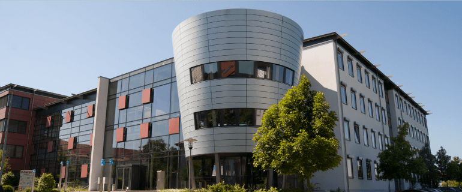

ABOUT OUR COMPANY

With over a decade of manufacturing experience our company takes pride in consistently fulfilling its commitment to customers, employees and investors. Our PVC and Aluminium systems, as well as our curtain walls systems and Weiss bond are produced with the utmost attention to customer needs, in order to provide welfare, comfort and security. We offer a substantial variety of product lines, hence our core value is to provide outstanding insulation and energy efficiency no matter the area of application.
INNOVATIVE AND SUSTAINABLE
Our PVC and Aluminium systems, as well as our curtain walls systems and Weiss bond are produced with the utmost attention to customer needs, in order to provide welfare, comfort and security.